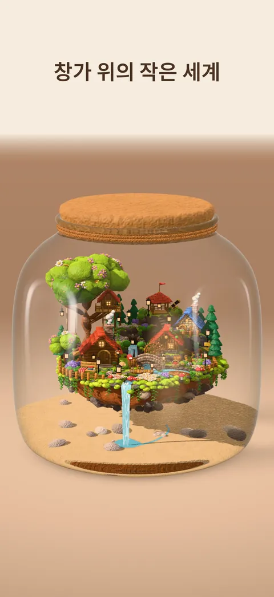
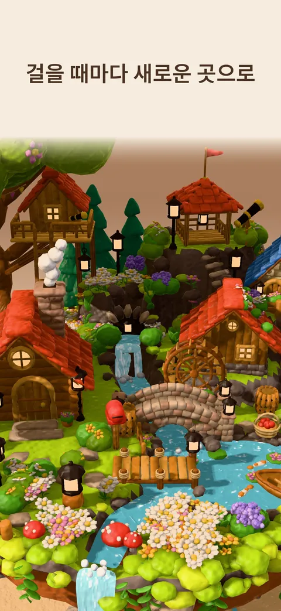
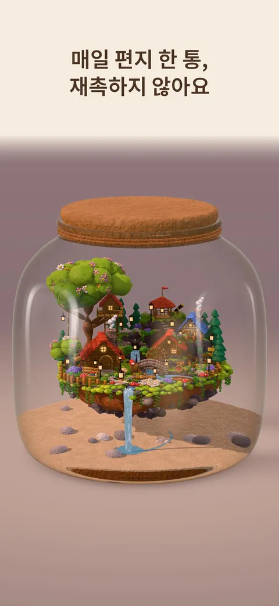
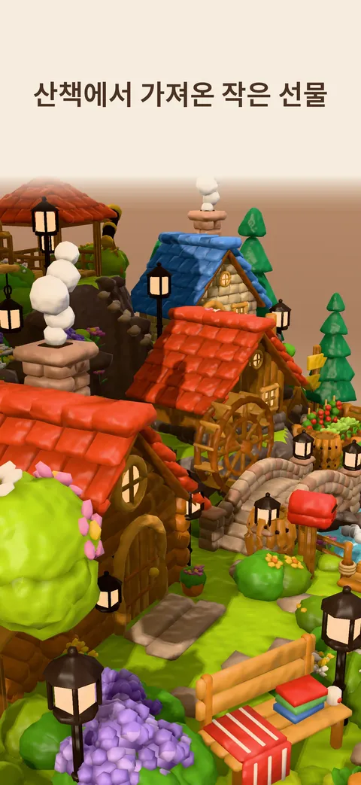
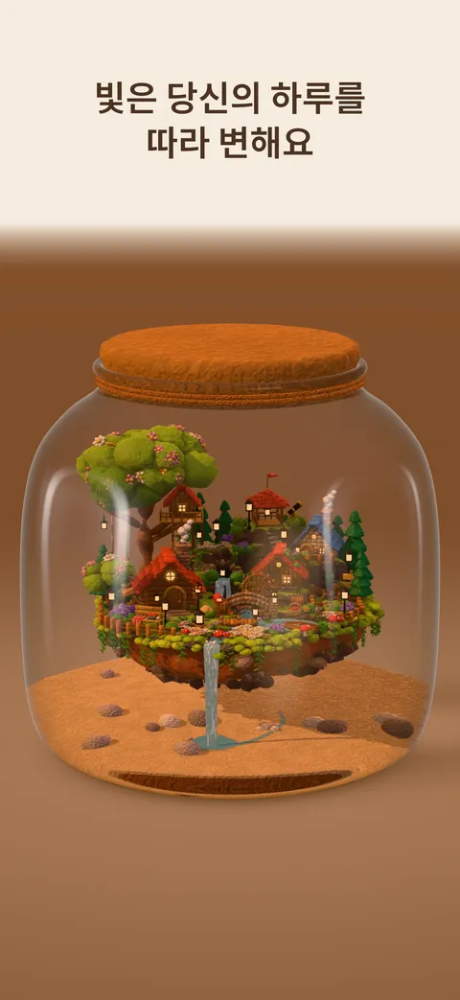
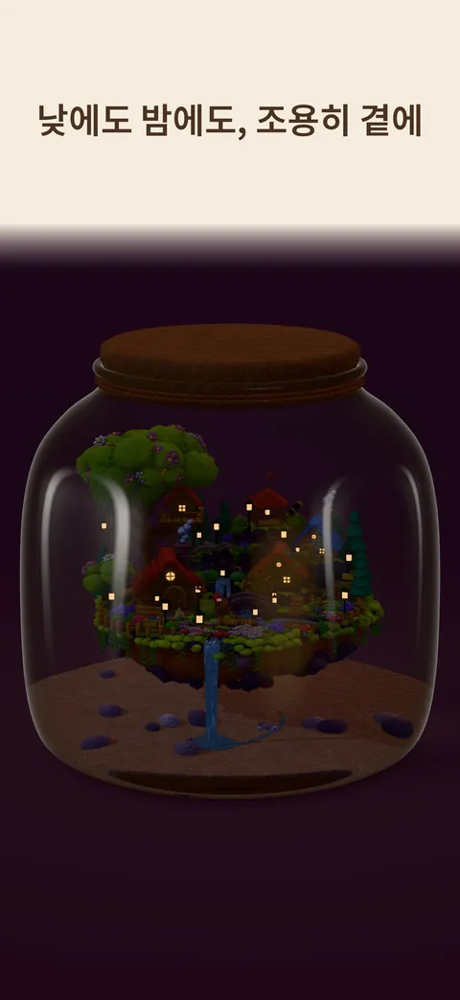

당신의 산책이 꼬마의 산책이 돼요
허락해 주시면 건강 앱에서 걸음 수를 읽어요. 스노볼 속 오솔길이 매일 조금씩 길어지고, 새로운 풀꽃과 장소가 나타나요.
작은 친구가 살고 있어요. 당신이 걸으면 함께 걷고, 쉬면 함께 쉬고, 유리병 옆에 작은 선물을 놓아 두어요.
Ashling은 당신의 iPhone 안에서만 살아요. 넘겨야 할 피드도, 따라잡아야 할 것도 없어요. 조용한 순간이 필요할 때 열고, 다시 하루를 이어 가세요.
허락해 주시면 건강 앱에서 걸음 수를 읽어요. 스노볼 속 오솔길이 매일 조금씩 길어지고, 새로운 풀꽃과 장소가 나타나요.
3일째에 모래시계가 나타나요. 집중할 때마다 작은 카라반이 사막을 건너 알록달록한 모래를 가져와요. 연속 기록은 없어요.
꼬마는 짧은 편지를 쓰고, 유리병 옆에 즉석 사진을 남겨요. 작은 앨범에 모아 둘 수 있어요.
유리병 속 새벽, 한낮, 해 질 녘, 밤은 실제 시간과 같아요. 밤이 되면 창문에 불이 켜지고 섬도 잠들어요.
꼬마에게 모자를 골라 주고, 유리병을 즉석 사진으로 찍어 한 번에 공유해요.
홈 화면 위젯, 잠금 화면의 집중 실시간 현황, 침대 곁의 StandBy 수면등.
옆으로 넘겨 더 보기






Ashling은 무료로 다운로드할 수 있어요. 선택 항목 두 가지는 한 번만 사는 것이고, 구독이 아니에요.
계정도, 서버도, 광고도, 분석 도구도 없어요. 걸음 수는 iPhone 안에서만 읽고, 밖으로 나가지 않아요. 이 웹사이트에도 추적 코드나 쿠키가 없어요.
아니요. 무료로 다운로드하고, 모래시계와 이끼 뚜껑은 한 번만 사면 돼요. 새 iPhone에서는 '구입 복원'으로 되찾을 수 있어요.
필요 없어요. 로그인도 서버도 없고, 모든 것이 iPhone 안에 남아요.
허락해 주시면 건강 앱에서 하루 걸음 수만 읽어 꼬마가 얼마나 걸을지 정해요. 건강 앱에 기록하지 않고, 걸음 수가 기기 밖으로 나가지 않아요. 허락하지 않아도 그대로 쓸 수 있어요.
나쁜 일은 없어요. 꼬마가 아프거나 슬퍼하지 않고, 잃어버리는 것도 없어요. 섬은 그냥 기다려요.
출시 때는 iPhone만 지원해요.
2027년 봄 App Store 출시 예정이에요(iOS 17 이상 iPhone). 출시일에는 이 페이지에서 바로 다운로드할 수 있어요.
Ashling
App Store 출시 예정2027년 봄 · iPhone